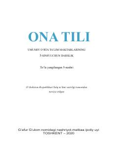

OT5-sinf o'quvchilari uchun mo'ljallangan ona tili fani darsligi.
Ushbu darslik umumiy o'rta ta'lim maktablarining 5-sinf o'quvchilari uchun mo'ljallangan bo'lib, ona tili fanidan nazariy va amaliy bilimlarni o'z ichiga oladi. Kitobda so'zlar tuzilishi, imlo qoidalari, leksikologiya va matn tahlili kabi mavzular yoritilgan.